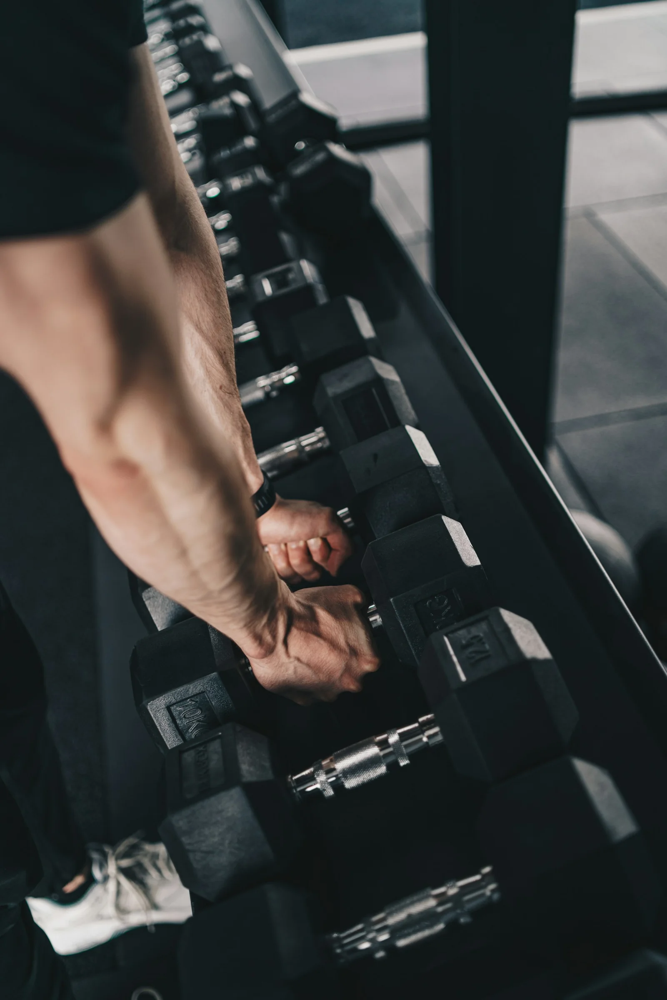
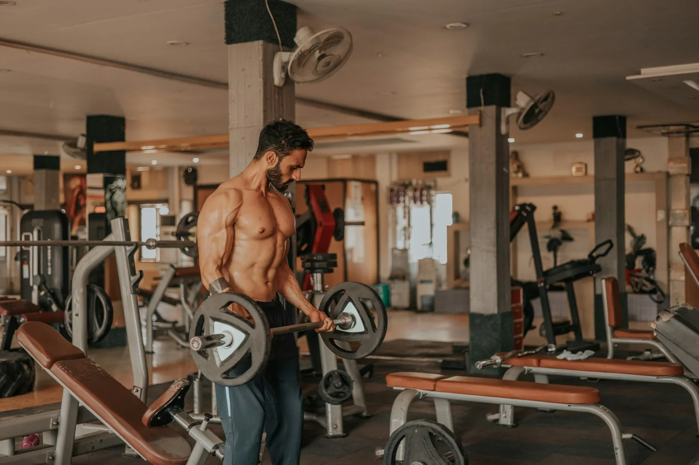
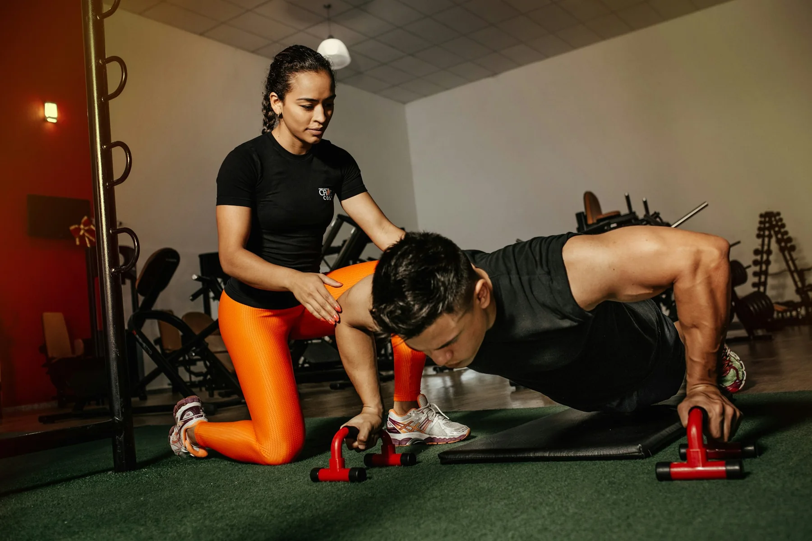
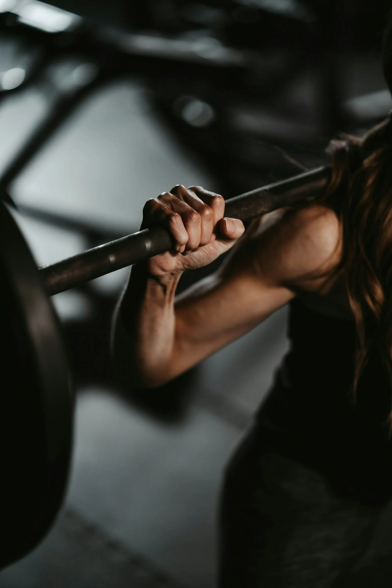
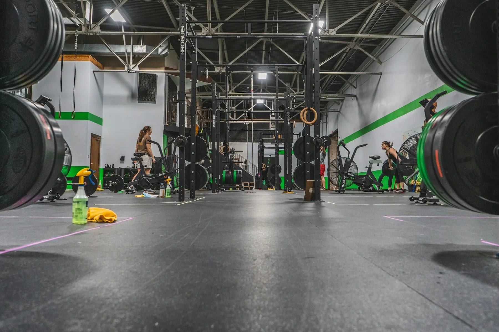
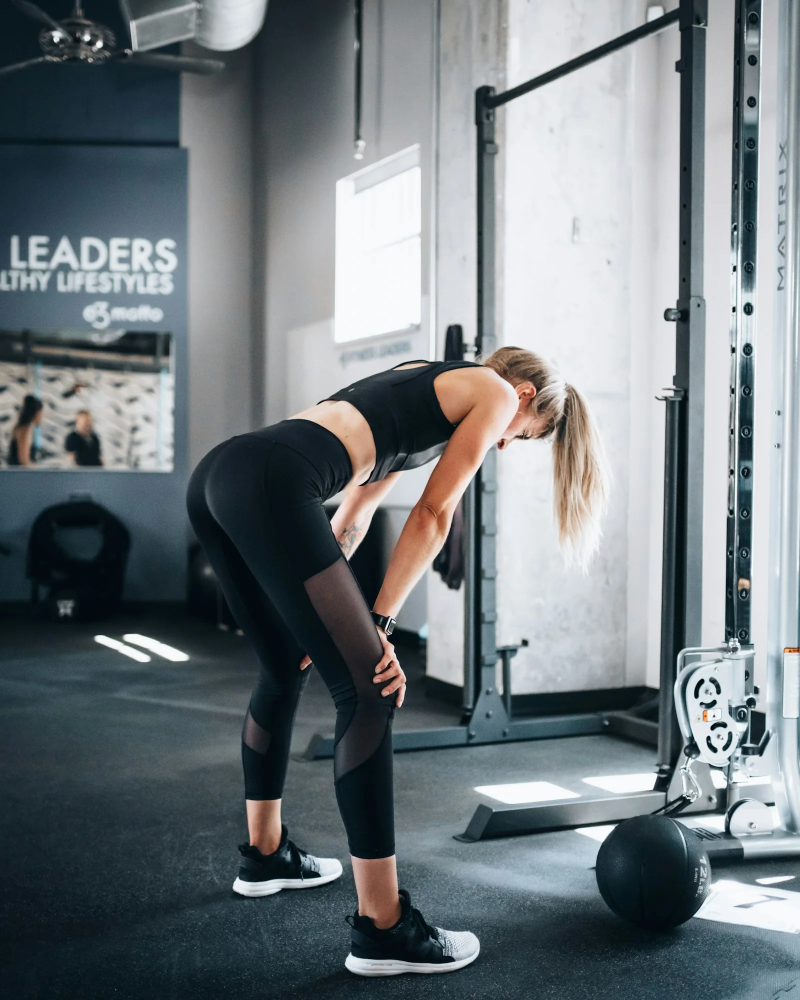
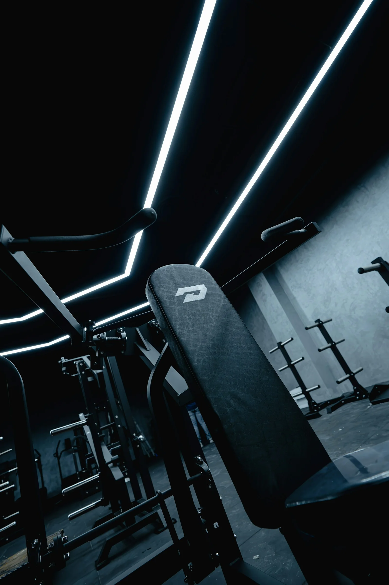
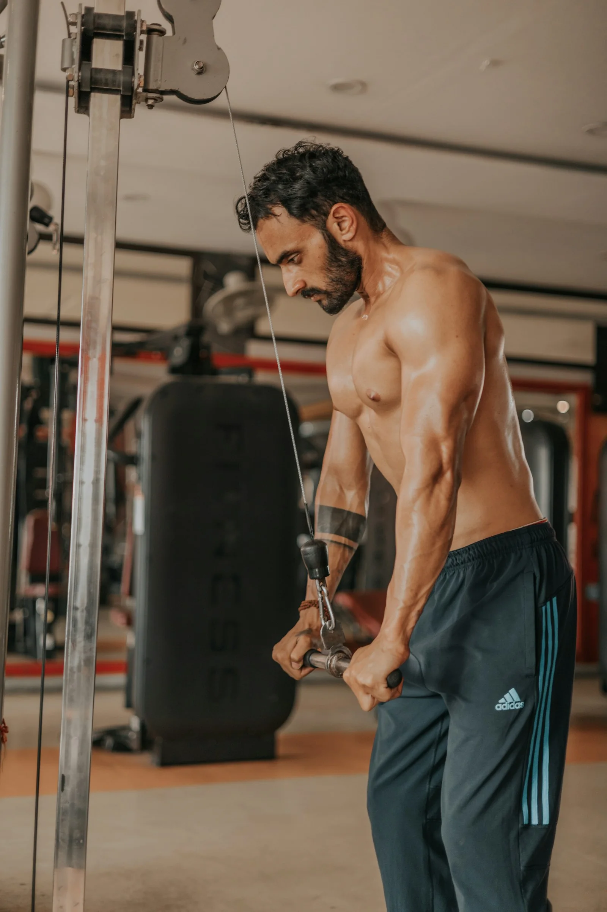

INDIVIDUAL ATTENTION01PERSONAL
TRAINING
Your goals, your pace, your coach. For learning the basics, improving technique or getting back into a routine.
PERSONAL TRAINING / HOWRAH
Less guesswork. Better movement. A training plan that starts where you are—and gives you somewhere to go.

SHOW UP. LEARN. KEEP BUILDING.01 / A BETTER WAY TO BEGIN
For your first day, your comeback,
and everything you want to build next.

You don't need to know every machine. You need someone to show you what matters.
We start with your training experience, your goals and the time you can actually make. Then we choose the movements, pace and coaching format that fit.
Clear demonstrations, useful cues and time to practise.
A manageable plan you can return to when the week gets busy.
Progress the reps, control or load when you're ready.
02 / FIND YOUR WAY TO TRAIN
Choose a format. We'll help you
find the right starting level.

INDIVIDUAL ATTENTION01Your goals, your pace, your coach. For learning the basics, improving technique or getting back into a routine.

MOVE BETTER. GET STRONGER.02Build strength and the fitness to use it. Focused lifting, useful conditioning and a clear reason behind every session.

SHARED ENERGY. REAL COACHING.03Train alongside others without getting lost in the crowd. Shared sessions with exercises and loads matched to you.
Not sure which fits? Tell us what you want from training. We'll talk you through the options.
03 / YOUR FIRST FOUR WEEKS
Start with familiar movements. Find a pace you can repeat. Build confidence before chasing bigger numbers.
START WHERE YOU ARE
Talk through your goals, training history and availability. Practise the main movement patterns and find starting loads you can control. The first week is about learning, not proving yourself.
FAMILIAR FEELS BETTER
Return to the same useful movements. With less to remember, you can focus on your setup, breathing and control. We'll adjust anything that doesn't feel manageable.
PROGRESS THAT MAKES SENSE
When the quality is there, take a small step forward. That might mean another good rep, a little more weight or better control. Your recovery and confidence help set the pace.
SEE WHAT'S WORKING
Review what you attended, what feels more familiar and where you need support. Keep the work that fits, adjust what doesn't and plan the next block around your progress.

STRENGTH BELONGS TO YOU, TOO.04 / WOMEN'S STRENGTH COACHING
You don't have to “get fit first” to start lifting.
Learn the equipment, find your stance and practise at a pace that feels manageable. Ask questions. Take your time. Confidence grows with each familiar movement.
05 / INSIDE THE SESSION
Here's how a typical session can flow.
Timing changes with your programme.

Warm up the movements you'll use. Check how you're feeling and make any adjustments before the main work.
06 / MORE THAN A HEAVIER WEIGHT
Progress can be another controlled rep. Feeling less out of breath. Showing up on a busy week. Knowing how to start without second-guessing yourself.
Tell us what progress means to you
MAKE THE EFFORT COUNT.07 / THE TRAINING ATMOSPHERE
Space to practise.
Equipment to build with.
Training inspiration from stock photography. Enquire to confirm the actual venue and facilities in Jagadishpur.
08 / NOTICE WHAT'S CHANGING
We look beyond the scales. These are the changes worth paying attention to.
The plan fits your week well enough to become a routine.
Better setup, more control and fewer reminders.
More good reps, a useful load increase or steadier pacing.
Less hesitation and a clearer direction for your training.
09 / BEFORE YOU BEGIN
You don't need all the answers before you start. Here are a few that help.
Ask us something elseYes. We'll start with simple movements, manageable loads and clear explanations. You can learn the equipment as you go; previous gym experience isn't required.
Tell us what time you can realistically make. Two planned sessions can be a useful starting routine, with the most important work prioritised around your goals.
Personal training gives you dedicated attention throughout the session. Small-group coaching combines shared energy with individual adjustments. Your experience, preferences and availability help decide the format.
We can plan strength and conditioning around that goal. Training works alongside food habits, daily activity and recovery. We'll discuss a manageable routine rather than promise a fixed result or deadline.
We'll use your current starting point rather than your old personal bests. Begin with manageable work, rebuild familiarity and progress as your technique and recovery allow.
Share any relevant guidance from your healthcare professional before training. Fitness coaching doesn't replace medical care; some situations need clinical advice before a programme is planned.
Enquire for the exact Jagadishpur training location, current session availability and fees. The right format and schedule should be agreed before you commit.
10 / YOUR NEXT STEP
No perfect starting point needed. Tell us your goal, your experience and what your week looks like.